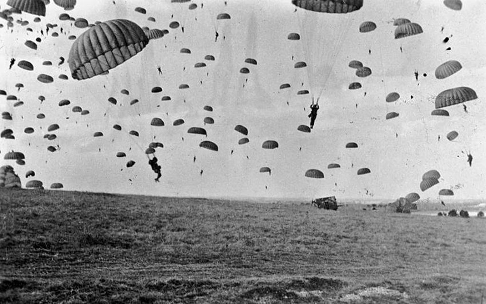
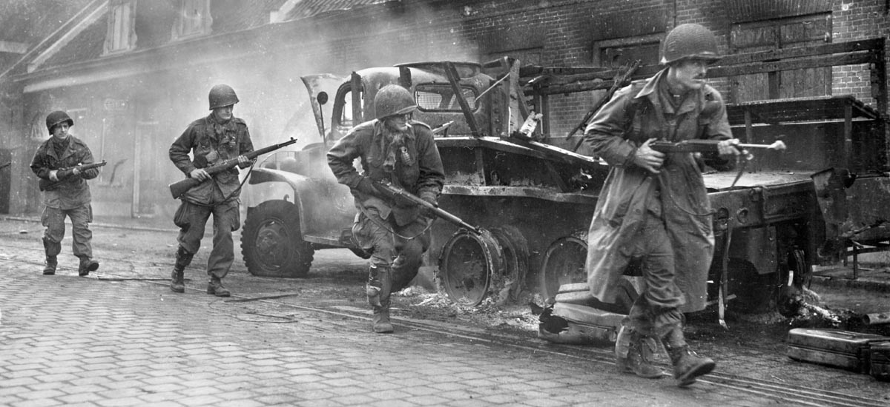
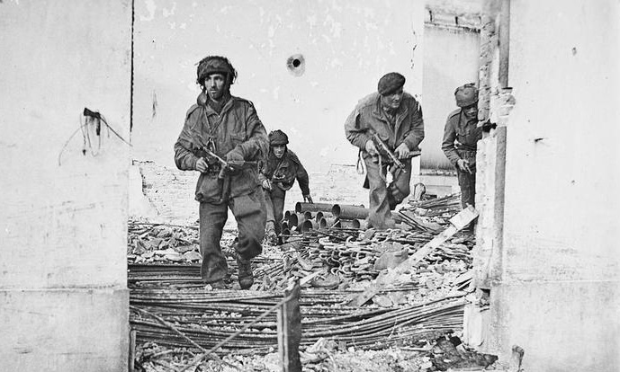

Operation Market Garden: Airborne Assault and the Rhine Corridor
Carried out in September 1944, Operation Market Garden combined a large-scale Allied airborne drop with a rapid armored ground thrust across the occupied Netherlands in an effort to seize key river crossings and open a route toward northern Germany and the Ruhr.
Strategic Concept and Airborne Planning

By early September 1944, Allied forces had liberated much of France and Belgium, but advancing armies faced lengthening supply lines, depleted fuel stocks, and formidable river obstacles in the Low Countries.
Field Marshal Bernard Montgomery proposed Market Garden as a bold alternative to a slower, broad-front advance, aiming to bypass fortified positions and establish an Allied bridgehead north of the Rhine.
The plan paired two components: Market, using the First Allied Airborne Army to capture bridges along a narrow highway corridor from Eindhoven to Arnhem, and Garden, sending British XXX Corps armor northward along that single road.
Airborne landings were assigned to the U.S. 101st Airborne Division around Eindhoven, the U.S. 82nd Airborne Division near Nijmegen, and the British 1st Airborne Division—supported by the Polish 1st Independent Parachute Brigade—around Arnhem.
Execution Along the Corridor and Resistance at Arnhem

Beginning on September 17, 1944, thousands of paratroopers and glider troops landed across eastern Netherlands, achieving early successes around Eindhoven and parts of the Nijmegen approaches while facing local German counterattacks.
Along the narrow elevated highway—known to troops as 'Hell's Highway'—column progress by XXX Corps slowed repeatedly due to damaged bridges, road congestion, blown culverts, and determined German defensive screens.
At the northern end of the operation, British airborne forces landing near Arnhem encountered stronger-than-anticipated German resistance, including armored and infantry elements resting or refitting nearby.
Only a small force reached and held the northern end of the Arnhem road bridge for several days, while the main airborne perimeter grew compressed and short of ammunition, food, medical supplies, and radio links.
Withdrawal, Lessons Learned, and Aftermath

After nine days of intense fighting and failed relief efforts across the lower Rhine, remaining British and Polish airborne survivors were evacuated south across the river on the night of September 25–26, 1944.
Although the operation failed to secure a crossing over the lower Rhine at Arnhem, Allied forces did capture and hold a salient extending to Nijmegen, which later supported further operations in the region.
Analysts and commanders pointed to several factors behind the outcome, including the reliance on a single narrow road corridor, weather and airlift constraints, underestimated German armor in the area, and communications challenges.
For Dutch civilians living along the corridor, the campaign brought heavy fighting, evacuations, destruction in towns such as Arnhem and Oosterbeek, and continued hardship during the ensuing winter.
By September 1944, Allied forces advancing from Normandy had covered vast distances across France and Belgium, but rapid movement had stretched logistics networks thin. Ports needed repair, rail lines had suffered heavy damage, and fuel deliveries had to be balanced across competing offensives.
The geography of the Netherlands added further complexity to any rapid advance. Broad rivers, drainage canals, dikes, polders, and flat open terrain restricted off-road movement for tanks and trucks, making intact bridges essential for keeping armored columns moving.
Market Garden was designed to overcome these obstacles through speed and surprise. Airborne divisions would land near key crossings along the route to Eindhoven, Nijmegen, and Arnhem, holding them until ground forces pushed north to link up and cross the lower Rhine.
Coordinating thousands of transport aircraft, gliders, escort fighters, and ground units required intricate scheduling. Weather over Britain and the continent, airlift capacity, and drop-zone selection all influenced how troops and supplies arrived during the opening days.
Along the ground corridor, British XXX Corps pushed northward along a narrow road network bordered by canals and low-lying fields. Traffic bottlenecks, damaged bridges, minefields, and German anti-tank and infantry resistance repeatedly slowed the pace of the column.
At Nijmegen, securing crossings over the Maas-Waal canal and the Waal River proved vital for keeping the corridor open. Allied paratroopers and ground units fought through urban areas and river approaches under heavy fire before gaining control of key bridges.
Around Arnhem, the British 1st Airborne Division faced stiff opposition as German forces contested landing zones, woods, and approaches to the town. Fighting grew intense around the Arnhem road bridge and later in the Oosterbeek perimeter as forces were pressed into a tighter defensive ring.
Communications and resupply became major hurdles for the airborne troops near Arnhem. Radio interference, terrain, and German positions between drop zones and the river complicated coordination, while air drops faced anti-aircraft fire and shifting front lines.
After days of heavy combat and repeated efforts to force a crossing into the Arnhem perimeter, Allied commanders decided to withdraw surviving airborne troops across the lower Rhine at night in late September. The evacuation saved many soldiers while marking the end of the effort to seize that northern crossing.
Although the drive to Arnhem fell short of its full objective, the operation left Allied forces holding an exposed salient reaching to Nijmegen. That foothold later supported subsequent Allied operations in the Low Countries and along the Rhine.
Historians examining Operation Market Garden often highlight the tension between bold operational ambition and practical constraints. Limited road capacity, fuel and supply pressures, weather delays, and German defensive resilience all shaped how events unfolded over those nine days.
The campaign also left a lasting mark on local communities across the Netherlands. Towns and villages along the corridor experienced severe damage, displacement, and prolonged hardship as fighting swept through and winter approached.
Timing and coordination between airborne drops and armored advances mattered at every stage, since delaying any single bridge along the route could hold up vehicles and supplies needed farther north toward the lower Rhine.
Around Oosterbeek and Arnhem, defending paratroopers and glider troops held out under difficult conditions, contending with artillery fire, snipers, shrinking perimeters, and limited evacuation routes before darkness allowed extraction across the river.
In the broader context of the autumn 1944 campaign, Market Garden demonstrated both the reach of Allied airborne forces and the stubbornness of German defenses along major European waterways.
Maintaining momentum along a single exposed highway required clear communications, timely engineering repairs, and steady support from air and ground units as German defenders contested road junctions and river approaches.
Even after the withdrawal from Arnhem, the surviving corridor into the Netherlands shaped Allied planning for subsequent river crossings and winter operations in northwestern Europe.
Air resupply drops, anti-aircraft defenses, and congested road junctions tested planners and troops alike throughout the campaign, leaving a complex operational record in the Low Countries as Allied forces prepared for the next stage of the war.
Narrow highways, river crossings, and stubborn German defenses shaped every stage of the nine-day battle across the Netherlands.
Bridges, dikes, and congested roads tested both attackers and defenders throughout the campaign, leaving a lasting mark on Allied operations in western Europe.
Commanders and troops faced severe logistical pressure along the narrow corridor, where contested river crossings and shifting front lines shaped the final outcome of the operation in late September 1944.
Difficult terrain and stiff resistance along the route tested every stage of the advance.